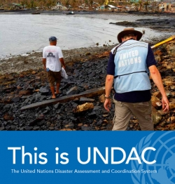
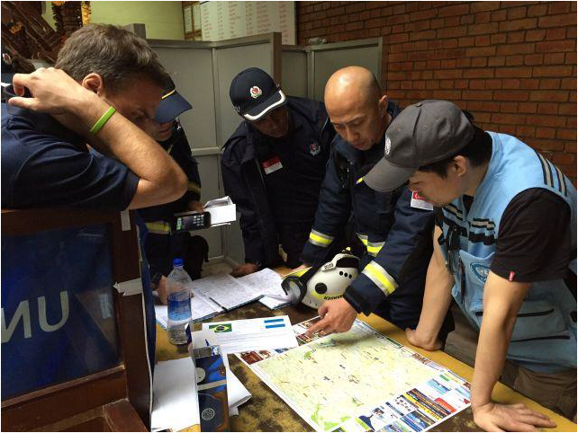
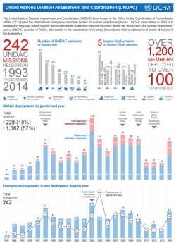

国連災害評価調整チーム（UNDAC）
UNDACとは
突発的な緊急事態に対応するための国際緊急援助システムのひとつに、国連災害評価調整チーム(United Nations Disaster Assessment and Coordination: UNDAC=アンダック)があります。
緊急事態の初動段階で国連や被災国政府をサポートするため、UNDACは1993年に創設されました。UNDACは、国レベル及び被災地レベルで、続々と届く国際援助の受け入れ調整にも当たります。
UNDACチームは、急な出動要請にも対応し、世界中どこにでも12～48時間以内に展開することが出来ます。このサービスは、国連の常駐/人道調整官の求めに応じて、また被災国による費用負担無しで提供されます。
UNDAC緊急対応ミッションの主な任務は、アセスメント、コーディネーション、情報マネジメントです。特に地震災害対応等の際、UNDACチームが現地活動調整センター(On-Site Operations Coordination Centre: OSOCC=オソック)を設置・運営し、国際都市型捜索救助(USAR)チームによる救助活動の調整に当たり、捜索・救助活動を効果的に実施する上で欠かせない役割を果たしています。こうした考え方は、「国際捜索救助活動効果と調整機能強化」に関する国連総会決議第57/150号（2002年12月16日付）で特に強調されています。
UNDACシステムは、4つの要素から成り立っています。
- スタッフ：各国政府組織や関係団体の経験豊富な緊急対応マネジャーが配置されています。UNDACメンバーは、業務遂行に必要な特別な訓練を受けています。
- 手法：あらかじめ定められた調整メカニズム、災害や人道危機の初動段階におけるアセスメント機能や情報マネジメントを行う手法）を用います。
- 手続き：派遣要請があってから12～48時間以内に、UNDACチームを動員し、災害や緊急事態の現場に展開できるシステムが確立しています。
-
装備：災害や緊急事態に派遣される際、UNDACチーム要員とこれをサポートする装備は、現場で自己完結できることが求められます。
UNDACの運営
UNDACの運営については、ジュネーブにあるOCHAの緊急サービス部（ESB）にあるフィールド調整支援課（FCSS）が担っています。このシステムは、アフリカ、アジア、ヨーロッパ、中東、太平洋およびアメリカ南北地域（カリブ海を含む）の5チームから構成されています。地域ごとの担当窓口の連絡先はこちら。
UNDAC加盟国は、UNDAC諮問委員会の年次会合に参加します。諮問委員会は、UNDACシステムを支えるため、OCHAの「ミッション勘定」に資金拠出をしている関係国から成っています。こうした資金は、各国のUNDACメンバーが派遣される際の費用に充てられます。UNDACシステムに参加する国際機関及び地域機構の代表も、年次会合に参加します。
2011年より、UNDAC諮問委員会は、その他の国々をオブザーバーとして加えました。資金拠出はないものの、例えばUNDAC関連のイベントを開催するなど、何らかの形でUNDACシステムへ貢献する意思を示している国などです。
これまでの緊急ミッション
UNDACはこれまでに、236の緊急ミッションを102カ国で実施してきました（2014年9月時点）。災害発生時、被災国から国際支援の要請があったり、そうした支援を調整する必要が生じたりした時など、OCHAがUNDACを派遣します。OCHAはまた、緊急事態が突然発生、あるいは急激に悪化するなどして、追加的な国際支援の調整を要する紛争下でも、UNDACを派遣することがあります。
最近では、リベリアにUNDACが派遣され、大流行したエボラ出血熱への対応に当たりました。UNDACチームはリベリア政府にによる救援活動をサポートすると共に、現場とクラスター（分野）間のコーディネーションを担いました。
UNDACチームの配置や細かな業務は、現地政府、および国連の常駐/人道調整官との話し合いのもと決定されます。チームは通常は、初動対応期間のみ現地に留まり、この期間は、自然災害の場合長くても3－4週間程度です。
UNDACフィールドハンドブック（2013年 英語）＞＞
UNDACパンフレット（2015年 英語）＞＞
UNDACアジア太平洋地域研修を日本で開催（2015年 日本語）＞＞